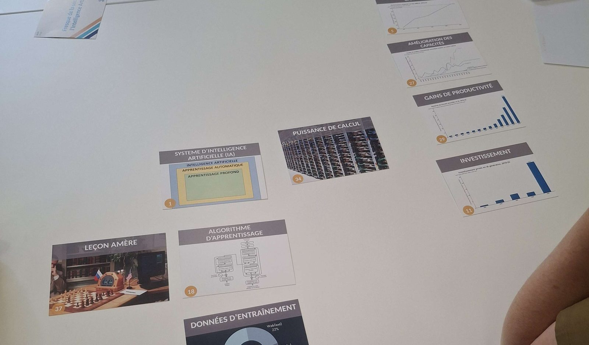

Atelier collaboratif · 2 heures
La Fresque des risques de l'IA
La Fresque des risques de l'IA est un atelier collaboratif de 2 heures, avec un animateur et deux à huit participants. Les participants posent les cartes sur un grand tableau, les relient, les annotent et en discutent, pour construire une vision d'ensemble de l'intelligence artificielle, de ses capacités à ses risques, jusqu'aux solutions possibles.
Participer à une fresque ne demande aucun prérequis technique. Les participants sont guidés par le contenu des cartes et peuvent apporter leur regard sur toutes les problématiques. Les discussions sont, bien sûr, encouragées.
Sous licence libre CC BY-SA 4.0.
Participer ou animer
Les ateliers ont lieu en ligne comme en présentiel. Parcourez les ateliers programmés dans l'onglet Participer et inscrivez-vous à celui qui vous convient.
Vous pouvez aussi animer le vôtre. Pour vous y aider, nous mettons à disposition un guide d'animation et un outil pour conduire l'atelier à distance. Proposez une date et votre atelier sera ajouté au calendrier.
Prochains ateliers

Un aperçu des cartes
Chaque carte porte une illustration au recto et une explication courte au verso.
39 cartes au total, dont la carte d'introduction.